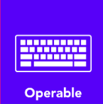

Accesibilidad Web
¿Qué es?
La accesibilidad web se refiere al diseño y desarrollo de sitios web, aplicaciones y herramientas digitales de manera que las personas con discapacidades puedan usarlas. Esto incluye a personas con discapacidades visuales, auditivas, motrices, cognitivas, del habla, de lenguaje, de aprendizaje y neurológicas. La accesibilidad web busca eliminar las barreras que impiden la interacción o el acceso a sitios web por parte de las personas con discapacidad.
Importancia
La accesibilidad web combina la programación, el diseño y la tecnología para construir un Internet sin barreras. por lo tanto su importacia es esencial en que permita a todos los usuarios el entendimiento, el aprendizaje, la navegación y la plena interacción con la web.

Principios
Los principios de accesibilidad web se basan en las Pautas de Accesibilidad para el Contenido Web (WCAG) desarrolladas por el World Wide Web Consortium (W3C). Estos principios se resumen en el acrónimo POUR:
Perceptible
Principio: La información y los componentes de la interfaz de usuario deben ser presentables para los usuarios de manera que puedan percibirlos.
Ejemplo: Uso de texto alternativo (alt text) para describir imágenes. Esto permite que las personas con discapacidades visuales, que utilizan lectores de pantalla, entiendan el contenido visual.

Operable
Principio: Los componentes de la interfaz de usuario y la navegación deben ser operables.
Ejemplo: Asegurar que todos los elementos interactivos (como enlaces y botones) se puedan utilizar con un teclado, sin necesidad de un mouse. Esto es esencial para personas con discapacidades motrices.
Comprensible
Principio: La información y el manejo de la interfaz de usuario deben ser comprensibles.
Ejemplo: Proveer instrucciones claras y sencillas para completar formularios, y validar las entradas para evitar errores. Esto ayuda a personas con discapacidades cognitivas.

Robusto
Principio: El contenido debe ser lo suficientemente robusto como para ser interpretado de manera fiable por una amplia variedad de agentes de usuario, incluyendo tecnologías de asistencia.
Ejemplo: Uso de código HTML semántico y limpio, asegurando que el contenido siga siendo accesible a medida que evolucionan las tecnologías y los navegadores.